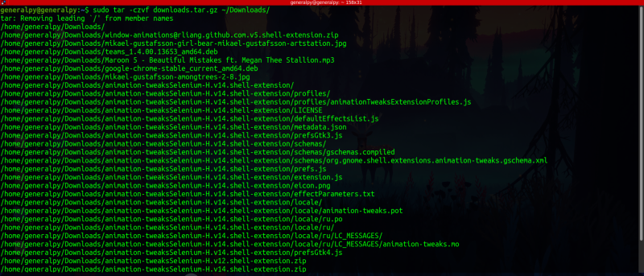
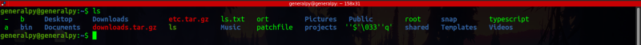
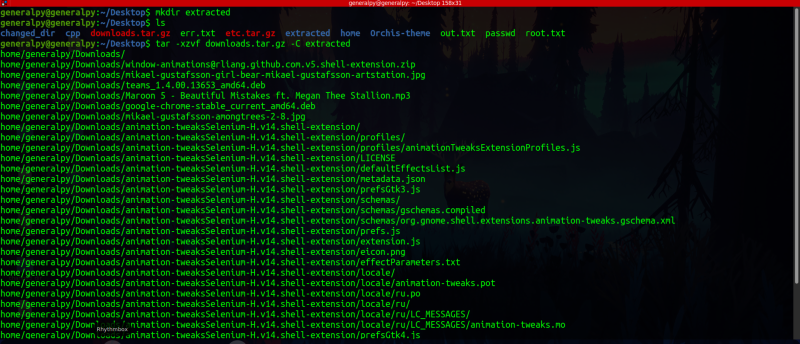
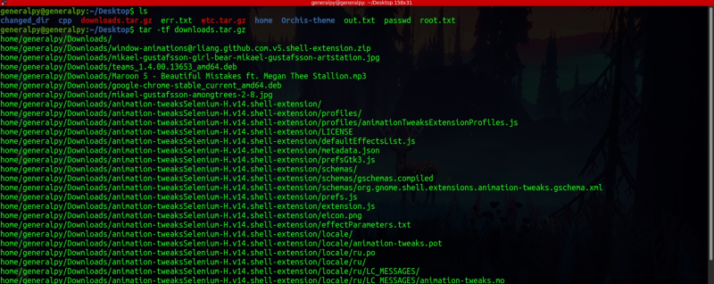

tar is an advanced tool which can both archive and extract files where archives are easily movable in different filesystems.
There is a difference between archiving and compressing files. Archiving is taking multiple files and putting them into a single file. Like take 10 100 kb files and create an archive out of it then size of archive will be 1000 kb whereas compressing
is taking multiple or single files and making a single file out of it with reduced size depending on type of files.
tar by default provides archiving only but with some flags we can pass contents to compressing algorithms and compress files without a dedicated compressing tool.
Some important tar flags are :
-c : creates the archive out of files specified.
tar -c dest_tar_name source_filesThe tar file created is know as tarball.
-v : Stands for verbose. Shows commands progress.
-z : Also compresses files with gzip compressing utility which is most used compressing utility in linux. Usually we add .tar.gz extension or .gzip extension to archives which are also compressed, just for visual puposes.
-f : Allows to specify filename for the archive.
In other linux commands order of options doesn't matters but for tar we always have to specify tar name after the -f flag.


-j : Used to compress files with bzip2 compressor. bzip2 creates smaller files at the cost of speed.
We can also pass multiple files or directories to tar. To do that just list them at the end.
--exclude : Used to exclude file types. Can be used multiple times.
tar --exclude="*.mkv" --exclude="*.mp3" ...
-x : Short for extract. Is used to extract the archive. All options used to archive must be used(like z for decompressing). Use -C to extract files at a different location.
tar -x.. tarballName -C destination_location
Paths are same as files original paths, our archive was in /home/generalpy/Downloads so same directory tree is created when files are extracted.
-t : Used to check contents of an archive without extracting it.

Pass this output to grep to search for a particular file.
/etc directory is very important as it contains configs for whole system and it is important to make a backup of it.
We can create backups of /etc with different versions according to date by using below command.
sudo tar -cvjf etc.$(date +%F).tar.bz2 /etc/
We will learn about use of $ in shell scripting section.
There are lot of files nowadays with .tar.xz extension. These files are compressed with lzma algorithm. tar will autodetect and extract these archives.
Note that gzip and bzip2 algorithms can be applied individually by gzip and gunzip commands for gzip and bzip2 and bunzip2 commands for bzip2 algorithm.